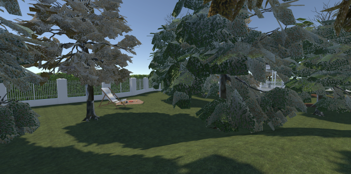
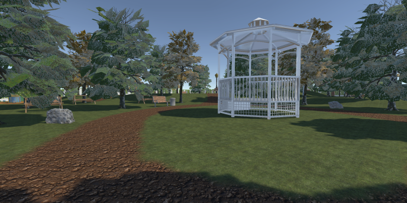
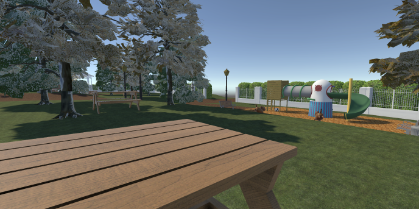
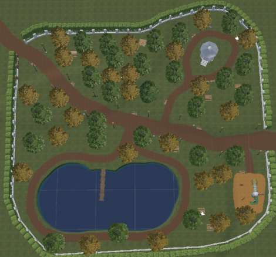

> Projet VR Médical
Application Unity VR – Hôpital Émile Roux

Vue immersive de la map Parc : travail sur l’ambiance, la végétation et l’éclairage afin de créer un environnement réaliste et apaisant.
Présentation du projet
Ce projet consiste en la création d’une application de réalité virtuelle développée avec Unity pour l’hôpital Émile Roux. L’objectif est d’accompagner des patients ayant subi un AVC dans leur rééducation neurologique, via des exercices immersifs et progressifs.
Le développement a été réalisé par une équipe de 20 personnes, réparties en plusieurs groupes (Ressources, UI, UX, Datas et LIV). Je faisais partie du groupe Ressources.
Map Parc & interactions VR
J’ai été en charge de la création complète de la map Parc. Cet environnement propose plusieurs zones interactives permettant de travailler le repérage visuel et le pointage d’objets.

Repère visuel principal utilisé dans les exercices VR.

Table de pique-nique, aire de jeux et éléments de décor.

Organisation des chemins et zones interactives.
Les exercices sont divisés en trois niveaux de difficulté progressifs, allant d’objets très visibles à des éléments plus discrets, afin d’adapter la difficulté aux capacités du patient.
Applications utilisées
| Application | Utilisation dans le projet |
|---|---|
| Unity | Développement de l’application VR, création des interactions et des scènes |
| Blender | Création et optimisation des assets 3D |
| GitHub | Travail collaboratif et gestion des versions du projet |
| Unity Asset Store | Récupération d’assets et de textures |
| Sketchfab | Complément et intégration d’assets 3D |
| Jira | Organisation du travail et suivi des tâches |